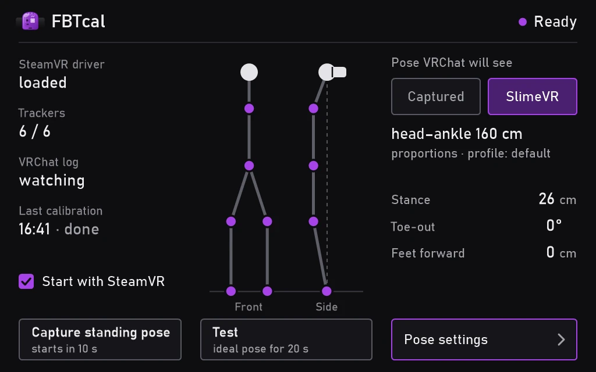

No standing up at all
The standing pose can come straight from your SlimeVR body proportions, the ones the SlimeVR server already knows. Or stand up once, right after a full reset, and let fbtcal capture your own. One switch, and your capture stays when you try the other.